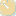
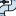

<!doctype html>
<html lang="en">
    <head>
        <meta charset="utf-8">
        <meta http-equiv="X-UA-Compatible" content="IE=edge">
        <meta name="viewport" content="initial-scale=1,user-scalable=no,maximum-scale=1,width=device-width">
        <meta name="mobile-web-app-capable" content="yes">
        <meta name="apple-mobile-web-app-capable" content="yes">
        <link rel="stylesheet" href="css/leaflet.css">
        <link rel="stylesheet" href="css/L.Control.Layers.Tree.css">
        <link rel="stylesheet" href="css/L.Control.Locate.min.css">
        <link rel="stylesheet" href="css/qgis2web.css">
        <link rel="stylesheet" href="css/fontawesome-all.min.css">
        <link rel="stylesheet" href="css/leaflet.photon.css">
        <style>
        html, body, #map {
            width: 100%;
            height: 100%;
            padding: 0;
            margin: 0;
        }
        </style>
        <title></title>
    </head>
    <body>
        <div id="map">
        </div>
        <script src="js/qgis2web_expressions.js"></script>
        <script src="js/leaflet.js"></script>
        <script src="js/L.Control.Layers.Tree.min.js"></script>
        <script src="js/L.Control.Locate.min.js"></script>
        <script src="js/leaflet.rotatedMarker.js"></script>
        <script src="js/leaflet.pattern.js"></script>
        <script src="js/leaflet-hash.js"></script>
        <script src="js/Autolinker.min.js"></script>
        <script src="js/rbush.min.js"></script>
        <script src="js/labelgun.min.js"></script>
        <script src="js/labels.js"></script>
        <script src="js/leaflet.photon.js"></script>
        <script src="data/Estanques_1.js"></script>
        <script src="data/Tuberias_Mutupin_2.js"></script>
        <script src="data/Infraestructura_3.js"></script>
        <script src="data/APR_4.js"></script>
        <script src="data/Medidores_5.js"></script>
        <script>
        var map = L.map('map', {
            zoomControl:false, maxZoom:28, minZoom:1
        }).fitBounds([[-36.432577901505006,-71.88794586206375],[-36.430822008769475,-71.88387748302891]]);
        var hash = new L.Hash(map);
        map.attributionControl.setPrefix('<a href="https://github.com/tomchadwin/qgis2web" target="_blank">qgis2web</a> &middot; <a href="https://leafletjs.com" title="A JS library for interactive maps">Leaflet</a> &middot; <a href="https://qgis.org">QGIS</a>');
        var autolinker = new Autolinker({truncate: {length: 30, location: 'smart'}});
        // remove popup's row if "visible-with-data"
        function removeEmptyRowsFromPopupContent(content, feature) {
         var tempDiv = document.createElement('div');
         tempDiv.innerHTML = content;
         var rows = tempDiv.querySelectorAll('tr');
         for (var i = 0; i < rows.length; i++) {
             var td = rows[i].querySelector('td.visible-with-data');
             var key = td ? td.id : '';
             if (td && td.classList.contains('visible-with-data') && feature.properties[key] == null) {
                 rows[i].parentNode.removeChild(rows[i]);
             }
         }
         return tempDiv.innerHTML;
        }
        // add class to format popup if it contains media
		function addClassToPopupIfMedia(content, popup) {
			var tempDiv = document.createElement('div');
			tempDiv.innerHTML = content;
			if (tempDiv.querySelector('td img')) {
				popup._contentNode.classList.add('media');
					// Delay to force the redraw
					setTimeout(function() {
						popup.update();
					}, 10);
			} else {
				popup._contentNode.classList.remove('media');
			}
		}
        var zoomControl = L.control.zoom({
            position: 'topleft'
        }).addTo(map);
        L.control.locate({locateOptions: {maxZoom: 19}}).addTo(map);
        var bounds_group = new L.featureGroup([]);
        function setBounds() {
        }
        map.createPane('pane_satelite_0');
        map.getPane('pane_satelite_0').style.zIndex = 400;
        var layer_satelite_0 = L.tileLayer('https://server.arcgisonline.com/ArcGIS/rest/services/World_Imagery/MapServer/tile/{z}/{y}/{x}', {
            pane: 'pane_satelite_0',
            opacity: 1.0,
            attribution: '',
            minZoom: 1,
            maxZoom: 28,
            minNativeZoom: 0,
            maxNativeZoom: 18
        });
        layer_satelite_0;
        map.addLayer(layer_satelite_0);
        function pop_Estanques_1(feature, layer) {
            var popupContent = '<table>\
                    <tr>\
                        <td colspan="2">' + (feature.properties['name'] !== null ? autolinker.link(String(feature.properties['name']).replace(/'/g, '\'').toLocaleString()) : '') + '</td>\
                    </tr>\
                    <tr>\
                        <td colspan="2">' + (feature.properties['folders'] !== null ? autolinker.link(String(feature.properties['folders']).replace(/'/g, '\'').toLocaleString()) : '') + '</td>\
                    </tr>\
                    <tr>\
                        <td colspan="2">' + (feature.properties['descriptio'] !== null ? autolinker.link(String(feature.properties['descriptio']).replace(/'/g, '\'').toLocaleString()) : '') + '</td>\
                    </tr>\
                    <tr>\
                        <td colspan="2">' + (feature.properties['altitude'] !== null ? autolinker.link(String(feature.properties['altitude']).replace(/'/g, '\'').toLocaleString()) : '') + '</td>\
                    </tr>\
                    <tr>\
                        <td colspan="2">' + (feature.properties['alt_mode'] !== null ? autolinker.link(String(feature.properties['alt_mode']).replace(/'/g, '\'').toLocaleString()) : '') + '</td>\
                    </tr>\
                    <tr>\
                        <td colspan="2">' + (feature.properties['time_begin'] !== null ? autolinker.link(String(feature.properties['time_begin']).replace(/'/g, '\'').toLocaleString()) : '') + '</td>\
                    </tr>\
                    <tr>\
                        <td colspan="2">' + (feature.properties['time_end'] !== null ? autolinker.link(String(feature.properties['time_end']).replace(/'/g, '\'').toLocaleString()) : '') + '</td>\
                    </tr>\
                    <tr>\
                        <td colspan="2">' + (feature.properties['time_when'] !== null ? autolinker.link(String(feature.properties['time_when']).replace(/'/g, '\'').toLocaleString()) : '') + '</td>\
                    </tr>\
                </table>';
            var content = removeEmptyRowsFromPopupContent(popupContent, feature);
			layer.on('popupopen', function(e) {
				addClassToPopupIfMedia(content, e.popup);
			});
			layer.bindPopup(content, { maxHeight: 400 });
        }

        function style_Estanques_1_0() {
            return {
                pane: 'pane_Estanques_1',
                radius: 4.0,
                opacity: 1,
                color: 'rgba(35,35,35,1.0)',
                dashArray: '',
                lineCap: 'butt',
                lineJoin: 'miter',
                weight: 1,
                fill: true,
                fillOpacity: 1,
                fillColor: 'rgba(152,125,183,1.0)',
                interactive: true,
            }
        }
        map.createPane('pane_Estanques_1');
        map.getPane('pane_Estanques_1').style.zIndex = 401;
        map.getPane('pane_Estanques_1').style['mix-blend-mode'] = 'normal';
        var layer_Estanques_1 = new L.geoJson(json_Estanques_1, {
            attribution: '',
            interactive: true,
            dataVar: 'json_Estanques_1',
            layerName: 'layer_Estanques_1',
            pane: 'pane_Estanques_1',
            onEachFeature: pop_Estanques_1,
            pointToLayer: function (feature, latlng) {
                var context = {
                    feature: feature,
                    variables: {}
                };
                return L.circleMarker(latlng, style_Estanques_1_0(feature));
            },
        });
        bounds_group.addLayer(layer_Estanques_1);
        map.addLayer(layer_Estanques_1);
        function pop_Tuberias_Mutupin_2(feature, layer) {
            var popupContent = '<table>\
                    <tr>\
                        <th scope="row">folders</th>\
                        <td>' + (feature.properties['folders'] !== null ? autolinker.link(String(feature.properties['folders']).replace(/'/g, '\'').toLocaleString()) : '') + '</td>\
                    </tr>\
                    <tr>\
                        <th scope="row">ID</th>\
                        <td>' + (feature.properties['ID'] !== null ? autolinker.link(String(feature.properties['ID']).replace(/'/g, '\'').toLocaleString()) : '') + '</td>\
                    </tr>\
                    <tr>\
                        <th scope="row">Diametro</th>\
                        <td>' + (feature.properties['Diametro'] !== null ? autolinker.link(String(feature.properties['Diametro']).replace(/'/g, '\'').toLocaleString()) : '') + '</td>\
                    </tr>\
                    <tr>\
                        <th scope="row">Material</th>\
                        <td>' + (feature.properties['Material'] !== null ? autolinker.link(String(feature.properties['Material']).replace(/'/g, '\'').toLocaleString()) : '') + '</td>\
                    </tr>\
                    <tr>\
                        <th scope="row">Estado</th>\
                        <td>' + (feature.properties['Estado'] !== null ? autolinker.link(String(feature.properties['Estado']).replace(/'/g, '\'').toLocaleString()) : '') + '</td>\
                    </tr>\
                </table>';
            var content = removeEmptyRowsFromPopupContent(popupContent, feature);
			layer.on('popupopen', function(e) {
				addClassToPopupIfMedia(content, e.popup);
			});
			layer.bindPopup(content, { maxHeight: 400 });
        }

        function style_Tuberias_Mutupin_2_0() {
            return {
                pane: 'pane_Tuberias_Mutupin_2',
                opacity: 1,
                color: 'rgba(32,43,216,1.0)',
                dashArray: '',
                lineCap: 'square',
                lineJoin: 'bevel',
                weight: 3.0,
                fillOpacity: 0,
                interactive: true,
            }
        }
        map.createPane('pane_Tuberias_Mutupin_2');
        map.getPane('pane_Tuberias_Mutupin_2').style.zIndex = 402;
        map.getPane('pane_Tuberias_Mutupin_2').style['mix-blend-mode'] = 'normal';
        var layer_Tuberias_Mutupin_2 = new L.geoJson(json_Tuberias_Mutupin_2, {
            attribution: '',
            interactive: true,
            dataVar: 'json_Tuberias_Mutupin_2',
            layerName: 'layer_Tuberias_Mutupin_2',
            pane: 'pane_Tuberias_Mutupin_2',
            onEachFeature: pop_Tuberias_Mutupin_2,
            style: style_Tuberias_Mutupin_2_0,
        });
        bounds_group.addLayer(layer_Tuberias_Mutupin_2);
        map.addLayer(layer_Tuberias_Mutupin_2);
        function pop_Infraestructura_3(feature, layer) {
            var popupContent = '<table>\
                    <tr>\
                        <th scope="row">id</th>\
                        <td>' + (feature.properties['id'] !== null ? autolinker.link(String(feature.properties['id']).replace(/'/g, '\'').toLocaleString()) : '') + '</td>\
                    </tr>\
                    <tr>\
                        <th scope="row">Tipo</th>\
                        <td>' + (feature.properties['Tipo'] !== null ? autolinker.link(String(feature.properties['Tipo']).replace(/'/g, '\'').toLocaleString()) : '') + '</td>\
                    </tr>\
                    <tr>\
                        <th scope="row">Estado</th>\
                        <td>' + (feature.properties['Estado'] !== null ? autolinker.link(String(feature.properties['Estado']).replace(/'/g, '\'').toLocaleString()) : '') + '</td>\
                    </tr>\
                    <tr>\
                        <th scope="row">Capacidad</th>\
                        <td>' + (feature.properties['Capacidad'] !== null ? autolinker.link(String(feature.properties['Capacidad']).replace(/'/g, '\'').toLocaleString()) : '') + '</td>\
                    </tr>\
                    <tr>\
                        <th scope="row">Modelo</th>\
                        <td>' + (feature.properties['Modelo'] !== null ? autolinker.link(String(feature.properties['Modelo']).replace(/'/g, '\'').toLocaleString()) : '') + '</td>\
                    </tr>\
                    <tr>\
                        <th scope="row">Mantencion</th>\
                        <td>' + (feature.properties['Mantencion'] !== null ? autolinker.link(String(feature.properties['Mantencion']).replace(/'/g, '\'').toLocaleString()) : '') + '</td>\
                    </tr>\
                    <tr>\
                        <th scope="row">Fecha inst</th>\
                        <td>' + (feature.properties['Fecha inst'] !== null ? autolinker.link(String(feature.properties['Fecha inst']).replace(/'/g, '\'').toLocaleString()) : '') + '</td>\
                    </tr>\
                    <tr>\
                        <th scope="row">Foto</th>\
                        <td>' + (feature.properties['Foto'] !== null ? autolinker.link(String(feature.properties['Foto']).replace(/'/g, '\'').toLocaleString()) : '') + '</td>\
                    </tr>\
                </table>';
            var content = removeEmptyRowsFromPopupContent(popupContent, feature);
			layer.on('popupopen', function(e) {
				addClassToPopupIfMedia(content, e.popup);
			});
			layer.bindPopup(content, { maxHeight: 400 });
        }

        function style_Infraestructura_3_0() {
            return {
                pane: 'pane_Infraestructura_3',
        rotationAngle: 0.0,
        rotationOrigin: 'center center',
        icon: L.icon({
            iconUrl: 'markers/Infraestructura_3.svg',
            iconSize: [25.840000000000007, 25.840000000000007]
        }),
                interactive: true,
            }
        }
        map.createPane('pane_Infraestructura_3');
        map.getPane('pane_Infraestructura_3').style.zIndex = 403;
        map.getPane('pane_Infraestructura_3').style['mix-blend-mode'] = 'normal';
        var layer_Infraestructura_3 = new L.geoJson(json_Infraestructura_3, {
            attribution: '',
            interactive: true,
            dataVar: 'json_Infraestructura_3',
            layerName: 'layer_Infraestructura_3',
            pane: 'pane_Infraestructura_3',
            onEachFeature: pop_Infraestructura_3,
            pointToLayer: function (feature, latlng) {
                var context = {
                    feature: feature,
                    variables: {}
                };
                return L.marker(latlng, style_Infraestructura_3_0(feature));
            },
        });
        bounds_group.addLayer(layer_Infraestructura_3);
        map.addLayer(layer_Infraestructura_3);
        function pop_APR_4(feature, layer) {
            var popupContent = '<table>\
                    <tr>\
                        <th scope="row">name</th>\
                        <td>' + (feature.properties['name'] !== null ? autolinker.link(String(feature.properties['name']).replace(/'/g, '\'').toLocaleString()) : '') + '</td>\
                    </tr>\
                    <tr>\
                        <td colspan="2">' + (feature.properties['folders'] !== null ? autolinker.link(String(feature.properties['folders']).replace(/'/g, '\'').toLocaleString()) : '') + '</td>\
                    </tr>\
                    <tr>\
                        <td colspan="2">' + (feature.properties['descriptio'] !== null ? autolinker.link(String(feature.properties['descriptio']).replace(/'/g, '\'').toLocaleString()) : '') + '</td>\
                    </tr>\
                    <tr>\
                        <td colspan="2">' + (feature.properties['altitude'] !== null ? autolinker.link(String(feature.properties['altitude']).replace(/'/g, '\'').toLocaleString()) : '') + '</td>\
                    </tr>\
                    <tr>\
                        <td colspan="2">' + (feature.properties['alt_mode'] !== null ? autolinker.link(String(feature.properties['alt_mode']).replace(/'/g, '\'').toLocaleString()) : '') + '</td>\
                    </tr>\
                    <tr>\
                        <td colspan="2">' + (feature.properties['time_begin'] !== null ? autolinker.link(String(feature.properties['time_begin']).replace(/'/g, '\'').toLocaleString()) : '') + '</td>\
                    </tr>\
                    <tr>\
                        <td colspan="2">' + (feature.properties['time_end'] !== null ? autolinker.link(String(feature.properties['time_end']).replace(/'/g, '\'').toLocaleString()) : '') + '</td>\
                    </tr>\
                    <tr>\
                        <td colspan="2">' + (feature.properties['time_when'] !== null ? autolinker.link(String(feature.properties['time_when']).replace(/'/g, '\'').toLocaleString()) : '') + '</td>\
                    </tr>\
                </table>';
            var content = removeEmptyRowsFromPopupContent(popupContent, feature);
			layer.on('popupopen', function(e) {
				addClassToPopupIfMedia(content, e.popup);
			});
			layer.bindPopup(content, { maxHeight: 400 });
        }

        function style_APR_4_0() {
            return {
                pane: 'pane_APR_4',
        rotationAngle: 0.0,
        rotationOrigin: 'center center',
        icon: L.icon({
            iconUrl: 'markers/APR_4.svg',
            iconSize: [22.799999999999997, 22.799999999999997]
        }),
                interactive: true,
            }
        }
        map.createPane('pane_APR_4');
        map.getPane('pane_APR_4').style.zIndex = 404;
        map.getPane('pane_APR_4').style['mix-blend-mode'] = 'normal';
        var layer_APR_4 = new L.geoJson(json_APR_4, {
            attribution: '',
            interactive: true,
            dataVar: 'json_APR_4',
            layerName: 'layer_APR_4',
            pane: 'pane_APR_4',
            onEachFeature: pop_APR_4,
            pointToLayer: function (feature, latlng) {
                var context = {
                    feature: feature,
                    variables: {}
                };
                return L.marker(latlng, style_APR_4_0(feature));
            },
        });
        bounds_group.addLayer(layer_APR_4);
        map.addLayer(layer_APR_4);
        function pop_Medidores_5(feature, layer) {
            var popupContent = '<table>\
                    <tr>\
                        <th scope="row">Socio_ID</th>\
                        <td>' + (feature.properties['Socio_ID'] !== null ? autolinker.link(String(feature.properties['Socio_ID']).replace(/'/g, '\'').toLocaleString()) : '') + '</td>\
                    </tr>\
                    <tr>\
                        <th scope="row">Cd_Medidor</th>\
                        <td>' + (feature.properties['Cd_Medidor'] !== null ? autolinker.link(String(feature.properties['Cd_Medidor']).replace(/'/g, '\'').toLocaleString()) : '') + '</td>\
                    </tr>\
                    <tr>\
                        <th scope="row">instalac</th>\
                        <td>' + (feature.properties['instalac'] !== null ? autolinker.link(String(feature.properties['instalac']).replace(/'/g, '\'').toLocaleString()) : '') + '</td>\
                    </tr>\
                    <tr>\
                        <th scope="row">Consumo</th>\
                        <td>' + (feature.properties['Consumo'] !== null ? autolinker.link(String(feature.properties['Consumo']).replace(/'/g, '\'').toLocaleString()) : '') + '</td>\
                    </tr>\
                    <tr>\
                        <th scope="row">Fecha pago</th>\
                        <td>' + (feature.properties['Fecha pago'] !== null ? autolinker.link(String(feature.properties['Fecha pago']).replace(/'/g, '\'').toLocaleString()) : '') + '</td>\
                    </tr>\
                </table>';
            var content = removeEmptyRowsFromPopupContent(popupContent, feature);
			layer.on('popupopen', function(e) {
				addClassToPopupIfMedia(content, e.popup);
			});
			layer.bindPopup(content, { maxHeight: 400 });
        }

        function style_Medidores_5_0() {
            return {
                pane: 'pane_Medidores_5',
        rotationAngle: 0.0,
        rotationOrigin: 'center center',
        icon: L.icon({
            iconUrl: 'markers/Medidores_5.svg',
            iconSize: [23.56, 23.56]
        }),
                interactive: true,
            }
        }
        map.createPane('pane_Medidores_5');
        map.getPane('pane_Medidores_5').style.zIndex = 405;
        map.getPane('pane_Medidores_5').style['mix-blend-mode'] = 'normal';
        var layer_Medidores_5 = new L.geoJson(json_Medidores_5, {
            attribution: '',
            interactive: true,
            dataVar: 'json_Medidores_5',
            layerName: 'layer_Medidores_5',
            pane: 'pane_Medidores_5',
            onEachFeature: pop_Medidores_5,
            pointToLayer: function (feature, latlng) {
                var context = {
                    feature: feature,
                    variables: {}
                };
                return L.marker(latlng, style_Medidores_5_0(feature));
            },
        });
        bounds_group.addLayer(layer_Medidores_5);
        map.addLayer(layer_Medidores_5);
        var overlaysTree = [
            {label: ' Medidores', layer: layer_Medidores_5},
            {label: ' APR', layer: layer_APR_4},
            {label: ' Infraestructura', layer: layer_Infraestructura_3},
            {label: ' Tuberias_Mutupin', layer: layer_Tuberias_Mutupin_2},
            {label: ' Estanques', layer: layer_Estanques_1},
            {label: "satelite", layer: layer_satelite_0},]
        var lay = L.control.layers.tree(null, overlaysTree,{
            //namedToggle: true,
            //selectorBack: false,
            //closedSymbol: '&#8862; &#x1f5c0;',
            //openedSymbol: '&#8863; &#x1f5c1;',
            //collapseAll: 'Collapse all',
            //expandAll: 'Expand all',
            collapsed: true,
        });
        lay.addTo(map);
        setBounds();
        var i = 0;
        layer_APR_4.eachLayer(function(layer) {
            var context = {
                feature: layer.feature,
                variables: {}
            };
            layer.bindTooltip((layer.feature.properties['name'] !== null?String('<div style="color: #ffffff; font-size: 8pt; font-family: \'Arial\', sans-serif;">' + layer.feature.properties['name']) + '</div>':''), {permanent: true, offset: [-0, -16], className: 'css_APR_4'});
            labels.push(layer);
            totalMarkers += 1;
              layer.added = true;
              addLabel(layer, i);
              i++;
        });
        resetLabels([layer_APR_4]);
        map.on("zoomend", function(){
            resetLabels([layer_APR_4]);
        });
        map.on("layeradd", function(){
            resetLabels([layer_APR_4]);
        });
        map.on("layerremove", function(){
            resetLabels([layer_APR_4]);
        });
        </script>
    </body>
</html>
